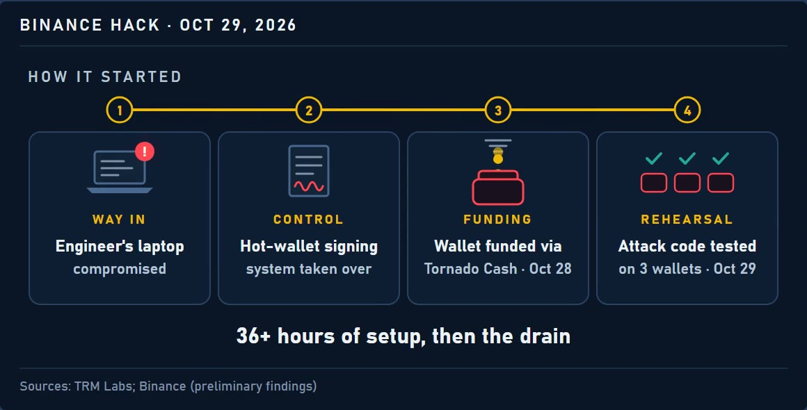
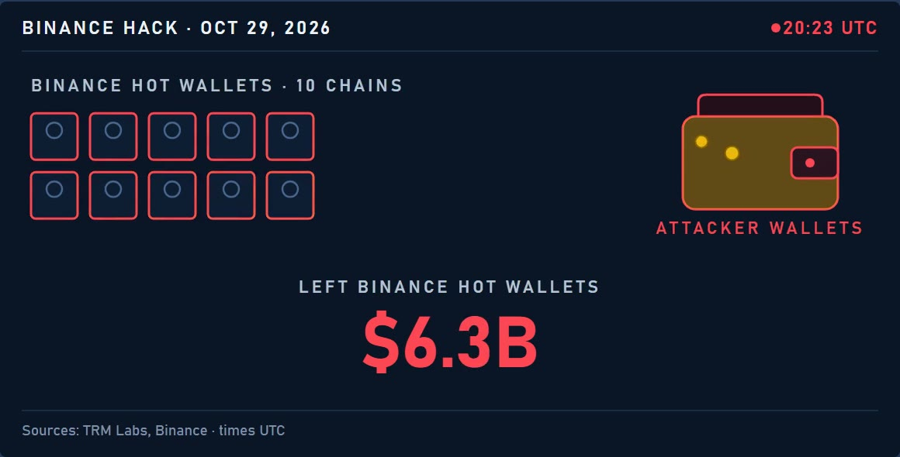
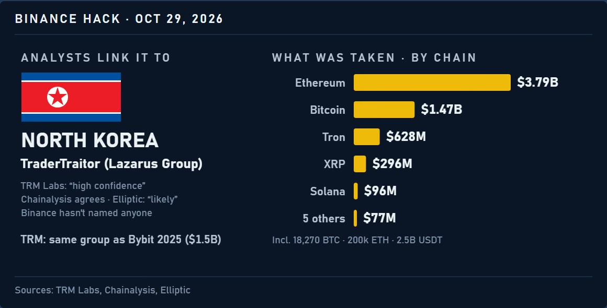
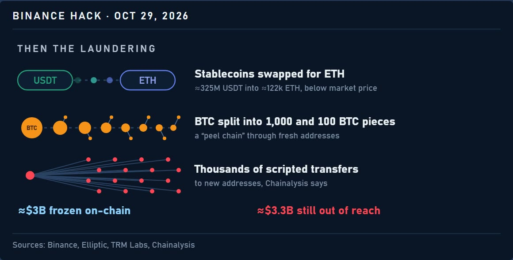

The $6.36B Binance hack, in charts and wallets
At about 20:23 UTC on October 29, 2026, a single transaction emptied one Binance wallet: 167,464 ETH and 63 tokens, worth $2.53 billion, according to Elliptic. By midnight UTC, $6.36 billion in crypto had left Binance's hot wallets, the wallets an exchange keeps online for everyday withdrawals, according to TRM Labs. Analytics firms call it the largest crypto hack on record. This page puts what they found side by side, with links to every report and to the wallets themselves.
- $6.36Btaken from Binance hot wallets, according to TRM Labs; others count up to $6.43B
- 10–11chains hit: TRM Labs counts 10, Elliptic 11
- ≈$2.8Bfrozen so far, according to Chainalysis; Binance says about $3B
- under 4hfrom the first transfer out to the last, in UTC
How it started
According to Binance's preliminary findings, the way in was "a compromised software engineer's laptop". From there, the attackers took over the system that signs transactions for the hot wallets. TRM Labs found that the attacking wallet was first funded through Tornado Cash, a tool that hides where crypto comes from, and that the setup took at least 36 hours.

The evening of October 29
- Oct 28
Test funding Three transfers of 0.1 ETH reach the attacker from Tornado Cash.
- Oct 29, 15:59
Setup A contract built to collect the funds goes on-chain.
- ≈20:05
First chains XRP goes first, then Solana and Optimism at about 20:10.
- 20:20
Bitcoin 18,270 BTC leave in one go.
- ≈20:23
Ethereum The Binance 14 hot wallet is emptied: 167,464 ETH and 63 tokens.
- ≈21:01
First freezes Tether freezes USDT; Circle follows about three minutes later.
- after 23:00
Last chains Avalanche and Polygon.
- 23:56
Last transfer The last sweep out of Binance's wallets.
- Oct 30, 04:30
Attribution Chainalysis links the hack to the TraderTraitor group.
Times from TRM Labs and Chainalysis. ≈ marks an approximate time.

What was taken
Most of the value sat on Ethereum: ether itself plus 185 different tokens, among them large amounts of the stablecoins USDT and USDC. A stablecoin is a token meant to hold the value of one US dollar.
- Ethereum$3.79B200,630 ETH and 185 tokens, among them 1.875B USDT, 823M USDC and 88.5M RLUSD
- Bitcoin$1.47B18,270 BTC
- Tron$628Mthe Tron network
- XRP$296Mthe XRP Ledger
- Solana$96Mthe Solana network
- 3 layer-2s$39MArbitrum, Optimism and Base together
- Avalanche$28Mthe Avalanche network
- Polygon$10Mthe Polygon network
In US dollars at prices on the day. TRM Labs counts $6.36B in all; Chainalysis about $6.4B and Elliptic $6.43B.
How it compares
Before this, the largest crypto hack on record was Bybit's in February 2025: $1.46B by Elliptic's count, itself more than twice any earlier theft. Elliptic puts this one at more than four times Bybit.
- Binance, 2026$6.36Baccording to TRM Labs
- Bybit, 2025$1.46Baccording to Elliptic
- Poly Network, 2021$611Mthe hacker returned nearly all of it within two weeks, according to Decrypt
- BNB Chain, 2022$570Monly about $100M of it left the chain, according to Decrypt
- Ronin, 2022$552Maccording to Decrypt
- Coincheck, 2018$530Maccording to Decrypt
Earlier hacks from Decrypt's list of the biggest, from March 2025, valued at the time of each hack. Other counts differ by a few percent.
Who is behind it
According to analysts, the hack points to TraderTraitor, a North Korean group that is part of what is often called the Lazarus Group. TRM Labs says so with "high confidence" and ties it to the same group as the Bybit hack in 2025. Chainalysis calls the link likely. Elliptic is more careful: it says attribution is not yet certain, and that no government or law enforcement agency has confirmed it. As of October 31, Binance has not named anyone.

- TRM Labs$6.36B
10 chains. Links the hack to TraderTraitor with "high confidence". About $2.7B frozen by 00:30 UTC on Oct 30.
- Chainalysis≈$6.4B
Calls TraderTraitor the likely group. About $2.8B frozen; the first freezes came by 21:14 UTC.
- Elliptic$6.43B
11 chains. Says attribution is not yet certain. $2.85B frozen, 94% of it stablecoins.
Then the laundering
Stablecoins have one weak spot for a thief: the company that issues them can freeze them. Ether and bitcoin have no issuer to do that. So, according to analysts, the first move was to swap stablecoins for ETH as fast as possible, even at a loss.
- Stablecoins into ETH. Chainalysis saw $325M of stablecoins swapped into $285M of ETH. By Elliptic's later count, 434M USDT had become 160,451 ETH, at 12–26% below market price.
- USDT into TRX. On Tron, 234M USDT went into 638M TRX, the network's own coin, according to Elliptic.
- A Bitcoin peel chain. The BTC was split into pieces of 1,000 and 100 BTC and passed on through 19 fresh addresses, according to Elliptic.

What was frozen
Freezes started within the hour. Tether moved first, at about 21:01 UTC, and Circle about three minutes later.
- Tether$1.77Bissuer of USDT
- Circle$825Missuer of USDC
- Ripple$40.5Missuer of RLUSD
- Arbitrum$30Mthe Arbitrum network
- WLFI$27.8MWorld Liberty Financial
About $2.7B in all. Later counts are higher: Chainalysis about $2.8B, Elliptic $2.85B, and Binance about $3B.
In all: $6.43B
- Frozen$2.85B44%
- Not frozen$3.58B56%
94% of what is frozen is stablecoins. Nothing is frozen on Bitcoin, XRP, Solana or NEAR.
Sean Farrell of Fundstrat put the part out of reach at about $3.3B, CNBC reports.
Follow the money on Ethereum
Etherscan, the Ethereum block explorer, labels the wallets involved. Three of them show the first hop. Each address links to its page, where every transfer can be checked.
Binance 14 victim
0x28C6c06298d514Db089934071355E5743bf21d60A Binance hot wallet. Sent 167,464.24 ETH to Exploiter 2 on Oct 29.
Exploiter 2 exploiter
0x5227f603C1eE34CE3C06eFe6477003BDfCCB2f8cHeld about $2.09B in tokens on Oct 31.
Exploiter 8 exploiter
0x8532FA14ACAf483729C449b8458aedDb900543D4Held about 197,460 ETH on Oct 31. Its first funds came from Exploiter 2.
Balances as of Oct 31; they change as funds move or are frozen.
The full list of labeled wallets is on Etherscan's label page. Bitcoin addresses are not listed here.
What Binance says
Binance says it will "cover all losses" and temporarily paused deposits and withdrawals, CNBC reports. In its own words: "Binance will absorb the financial impact of these stolen funds, not our users." On October 31, Binance said 90% of the stolen assets had been replenished, according to Reuters.
What comes next
- Nov 1
Withdrawals Binance plans to resume withdrawals, according to Reuters.
- Nov 2
Proof of reserves Binance plans to publish a proof of reserves, according to Reuters.
This page adds each date to the updates below once it has passed.
The market after
The lab tracks Bitcoin every week, and a hack this size moves the market the AIs are calling. Both charts start at the 4-hour candle the hack began in.
BTC at its lowest after the hack: $76,141.02 in the candle from 2026-10-30 16:00 UTC, −5.70% from $80,743.29, where the hack candle opened
Candles: Coinbase Exchange BTC-USD, 4-hour (hollow: rose, filled: fell). The solid line marks the hack, the dashed line the lowest price after it.
BNB at its lowest after the hack: $680.00 in the candle from 2026-10-29 20:00 UTC, −8.71% from $744.90, where the hack candle opened
Candles: Binance BNBUSDT, 4-hour (hollow: rose, filled: fell). The solid line marks the hack, the dashed line the lowest price after it.
Updates
Newest first. Each entry is dated, and the numbers above change only with a new entry here.
- October 31. First version of this page.
How this page was made
- Numbers come from the reports linked below. Where the firms differ, each number carries its firm's name.
- Times are UTC, from TRM Labs and Chainalysis.
- Wallets are Etherscan's labels; the balances were read on October 31.
- Candles are public 4-hour candles: BTC from Coinbase and BNB from Binance. The lowest price is the lowest low from the hack's candle on.
- Earlier hacks come from Decrypt's list of the biggest crypto hacks, valued at the time of each hack, and Bybit from Elliptic.
- The video and stills are from Repka's episode. Repka is an animated AI character, not a person.
Sources
- TRM Labs: North Korea steals $6.36 billion from Binance
- Chainalysis: Binance exploit, latest findings and response
- Elliptic: Binance, the largest hack in history
- CNBC: Circle and Tether freeze funds, the market reaction, what happens to the frozen funds
- Reuters: Binance says 90% of stolen assets replenished
- BBC: report on the hack
- Wikipedia: 2026 Binance hack
- The Hacker News: Binance suffers security breach
- The Block: Bitcoin slides below $77,000
- Etherscan: Binance hot wallet exploit label
- Decrypt: The biggest crypto hacks of all time
This is an experiment and documentation, not financial advice. I do not recommend buying or selling anything.